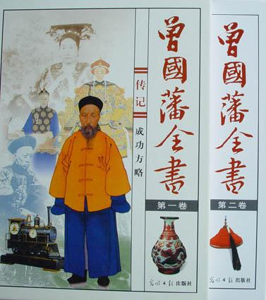

平凡的世界

总体观点
《平凡的世界》是中国当代文学史上影响最为深远的现实主义史诗力作，荣获第三届茅盾文学奖。全书以二十世纪七十年代中期至八十年代中期的黄土高原为历史舞台，通过双水村孙少平、孙少安两兄弟的不同人生轨迹，真实而深刻地全景式展现了中国当代城乡社会的历史性巨大变迁。
路遥在书中赋予苦难以前所未有的精神尊严与崇高美感。孙少安扎根乡土开办砖窑带领乡邻致富，孙少平则不甘平庸奔向外部世界、在煤矿地心深处以沉重体力劳动锤炼坚不可摧的灵魂。小说不仅是一曲关于奋斗与尊严的英雄赞歌，更深刻探讨了城乡二元壁垒、知识分子的精神困境与平凡个体在历史浪潮中的自我实现。
核心观点
-
1. 苦难的淬炼与精神尊严的高贵确立
苦难不是自怨自艾的借口，而是磨砺意志、提升精神境界的熔炉；即便身处社会最底层，个体依然拥有不可剥夺的思想尊严。
高中时孙少平贫穷得只能吃最下等的黑高粱面馍，但他偷偷借阅《红岩》《简·爱》，在饥饿与寒冷中构筑起坚韧丰富的精神殿堂。 -
2. 乡土扎根与突破藩篱的双重奋斗范式
少安代表扎根泥土、承担家族生存重负的务实开拓者，少平代表突破土地束缚、追寻精神广阔世界的现代漂泊者。
少安办砖窑经历破产又东山再起带富双水村，少平选择离开农村做揽工汉、下大牙湾煤矿当井下采煤工，各自实现生存价值。 -
3. 跨越阶层鸿沟的纯粹爱恋与现实之痛
少平与田晓霞的精神恋爱超越了世俗身份、地位与城乡差异，是灵魂与价值观的绝对契合，却终被残酷现实与意外灾难击碎。
晓霞从不嫌弃少平手上的老茧与煤灰，两人相约‘古塔山之约’，但晓霞在抗洪抢险中为救儿童不幸牺牲，留给少平终生挚痛。 -
4. 大历史变迁与微观个体命运的紧密共振
小说精准记录了包产到户、联产承包、改革开放等关键历史节点，生动展现了政策春风如何激活农村沉睡已久的生产力与个体活力。
孙少安敏锐捕捉到承包土地的机遇，率先在双水村推行联产到组，冒着被扣‘走资本主义道路’帽子的风险点燃乡村希望。 -
5. 平凡劳动的崇高感与对地心深处的归宿认同
少平在经历重度烧伤与爱人离世后，拒绝了留在省城轻省工作的机会，毅然选择重返煤矿井下，在最艰辛的劳动中锚定生命价值。
面部留下永久疤痕的少平走出省城医院，平静而庄严地踏上开往大牙湾煤矿的列车，选择与矿山工人和遗孀惠英母子生死相守。
全书结构
-
原西县城的青涩饥馑与双水村的生存重压
少平在县立高中忍饥挨饿结识郝红梅，少安在双水村操持穷困潦倒的家业，田润叶对少安暗生情愫却遭现实门第阻隔。
少平在全校同学打完饭后偷偷取走属于丙菜的黑馍，郝红梅与他同病相怜引发微妙同情。 -
包产到户的春风乍起与少安的成家立业
政治风向发生转折，少安拒绝润叶娶了不要彩礼的秀莲，大胆推行联产承包责任制，家庭生计初现转机。
少安与秀莲在破窑洞里举行简朴婚礼，两人同心协力拉土烧砖，双水村生产方式悄然生变。 -
少平出走黄土地与黄原城里的揽工生涯
少平不甘在乡村当一辈子民办教师，决然背上铺盖卷前往黄原城当泥瓦小工，重逢大学毕业的田晓霞开启灵魂对话。
少平在建筑工地脊背被石头磨得皮开肉绽，夜晚借着昏暗油灯阅读晓霞送来的参考消息与世界名著。 -
大牙湾煤矿的地心熔炉与古塔山之约
少平招工进入铜城大牙湾煤矿成为井下采煤工，在幽暗掌子面体味劳动的残酷与神圣，与晓霞定下两年后的古塔山相聚约定。
少平在数百米地底下与掌子面塌方殊死搏斗，师傅王世才在矿难中舍己救人壮烈牺牲。 -
晓霞抗洪牺牲的挚痛与古塔山下的独祭
田晓霞奔赴前线采访抗洪为救落水儿童壮烈牺牲，少平按期赴约在空无一人的古塔山下抚摸杜梨树泪流成河。
少平坐在古塔山顶吹响晓霞留下的哨子，在刺骨寒风中痛悼那段不可复制的崇高爱情。 -
生命的归途与地心平凡英雄的永恒坚守
少安砖厂扩大规模因秀莲肺癌去世痛彻心扉，少平在矿难中毁容拒绝转行，毅然重返大牙湾承担照顾师娘一家的责任。
少平在狂风暴雪中回到矿山，养子明明欢呼着扑入怀中，他在最坚实的平凡大地上找到了生命的最终锚点。